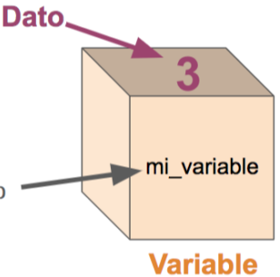
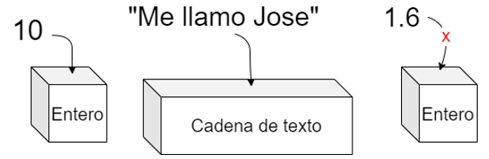

Introducción: ¿Qué son las variables?
Una variable es un espacio en memoria (memoria de la computadora) que sirve para almacenar datos o valores, representados como números, texto, un carácter o un simple “si” o ”no”. Las variables generalmente se les presentan como “cajas” que pueden guardar datos que requerimos para procesarlos.
Una analogía de las variables en programación es considerarlas como "recipientes” de cocina; para cocinar una receta, necesitamos ingredientes, y esos ingredientes debe de estar en recipientes, que los contengan y pueden ser usarlos a la hora de preparar tu receta, eso es lo que hace las variables, “contienen” los ingredientes (datos) que requerimos a la hora de programar.
Se les llama así porque son de valor “variable”, puedes ponerles un valor y después cambiárselo, aplicarle operaciones de todo tipo (sumar, restar, comparar con otras variables, etc.), obtener el dato que almacenan, y muchas otras cosas. Para programar requerimos datos, introducidos ya sea por el usuario, por el sistema u otros medios, y los datos se guardan en estas variables, pero Java requiere que le especifiquemos el “tipo de valor” que esta variable va a guardar, esto para fijar el tamaño, las operaciones y los comandos que puedes realizarle a esta variable, si va a ser un número entero o decimal, un texto, un solo carácter, etc.
Para empezar con las variables, debes saber sobre los tipos de datos que Java maneja.